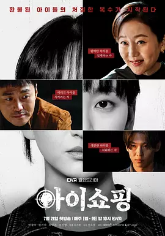

6.6
退货儿童
The Defects
2025
韩国
评分 6.6
导演:
吴基桓
演员:
廉晶雅 / 元真儿 / 金珍荣 / 李娜恩 / 安智浩
类型:
剧情,犯罪
剧情简介
领养中介组织表面上提供“圆满家庭”，实际却以冷冰冰的流程操作孩子的命运。那些被挑选、送走、再被退回的孩子，被视作商品般反复处理。泰植长期在系统内部工作，看着孩子们被贴上编号、档案、条件，心底积压的愧疚愈发沉重。他最终做出决定——将被退货的孩子悄悄带走，隐藏在一个偏僻的空间里，让他们至少拥有不再被抛弃的机会。秘密庇护所里，孩子们带着不同的创伤成长。有的沉默冷漠、有的敏感警惕、有的学会伪装情绪，只为在世界里找回一点属于自己的位置。他们与泰植之间像家人又像盟友，每个人都在挣扎着理解“被爱”与“被利用”的界线。随着时间推移，这些孩子开始以自己的方式追寻真相，回到曾经抛弃他们的大人世界。报复不是目的，而是一种试图让自己被看见的方式。与此同时，领养中介仍在运转，华丽宣传与残酷现实之间的裂缝不断扩大。曾经的养父母、冷漠的行政人员、觊觎利益的高层，都在故事中逐渐暴露出复杂的面孔。泰植必须在保护孩子与对抗系统之间不断做选择，一步走错就可能将所有人推向深渊。剧集以冷静的镜头语言直面“孩子商品化”这一令人不适的现实。案件般的紧迫感与家庭剧的亲密情绪交织，呈现出一段关于创伤、选择与重生的沉重旅程。当孩子们开始面对过去、重建自己，泰植也第一次明白，救赎从来不是替他们战斗，而是让他们有力量走进自己的未来。